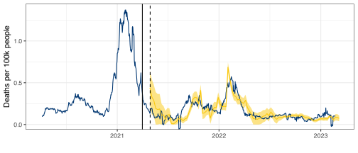
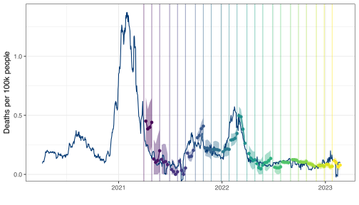

| MAE | RMSE | MAPE | MASE | |
|---|---|---|---|---|
| yhat1 | 2.873 | 4.024 | 43.140 | 66.100 |
| yhat2 | 5.382 | 9.689 | 36.083 | 123.817 |
CANSSI Prairies — Epi Forecasting Workshop 2025
Forecasting and Advanced Topics
Lecture 4
Daniel J. McDonald
Outline
- Fundamentals of Forecasting
- Evaluation
- A Workflow for Forecasting
- Advanced Customizations
- Build a Forecaster from Scratch
- Advanced Topics
1 Fundamentals of Forecasting
(with some review)
Forecasting is not magic
- Forecasts are generally comprised of two parts: trend and seasonality
- Methods for detecting and projecting trends are not magic; in general they’re not qualitatively that different from what you can do with your eyeballs
- That said, assimilating information from exogenous features (ideally, leading indicators) can lead highly nontrivial gains, beyond the eyeballs
- Remember … good data is just as (more?) important as a good model!
- Seasonality can help short-term forecasts. Long-term forecasts, absent of strong seasonality, are generally not very tractable
Basics of linear regression
Assume we observe a predictor \(x_i\) and an outcome \(y_i\) for \(i = 1, \dots, n\).
Linear regression supposes
\[\mathbb{E}[y_i\ \vert\ x_i] \doteq \beta_0 + \beta_1 x_i,\quad i=1,\dots,n.\]
- In
R, runlm(y ~ x), whereyis the vector of responses andxthe vector of predictors.
- Given \(p\) different predictors
\[ \begin{aligned} \mathbb{E}[y_i\ \vert\ \mathbf{x}_i] &\doteq \beta_0 + \beta_1 x_{i1} + \dots + \beta_p x_{ip}\\ &= \mathbf{x}^\mathsf{T}_i\beta &i=1,\dots,n. \end{aligned} \]
Linear regression with lagged predictor
- In time series, outcomes and predictors are usually indexed by time \(t\).
- Goal: predict future \(y\), given present \(x\).
- Model: linear regression with lagged predictor
\[\mathbb{E}[y_t\ \vert\ x_{t-k}] \doteq \beta + \beta_0 x_{t-k}\]
- Equivalent way to write the model:
\[\mathbb{E}[y_{t+k}\ \vert\ x_t] \doteq \beta + \beta_0 x_t\]
Autoregressive exogenous input (ARX) model
- Predict the outcome via a linear combination of its (own) lags and exogenous predictors
\[\mathbb{E}[y_{t+h}\ \vert\ \mathbf{y}_{\leq t}, \mathbf{x}_{\leq t}] \doteq \phi + \sum_{i=0}^p \phi_i y_{t-i} + \sum_{j=0}^q \beta_j x_{t-j}\]
- Notice: we don’t need to include all contiguous lags, and we could estimate e.g.,
\[\mathbb{E}[y_{t+h}\ \vert\ \mathbf{y}_{\leq t}, \mathbf{x}_{\leq t}] \doteq \phi + \phi_0 y_{t} + \phi_1 y_{t-7} + \phi_2 y_{t-14} + \beta_0 x_{t} + \beta_1 x_{t-7} + \beta_2 x_{t-14}\]
Popular forecasting frameworks
- Autoregressive integrated model average (ARIMA) models
- Exponential smoothing with trend and seasonality (ETS)
- Prophet forecaster
- DeepAR (neural network)
First two here are classic and standard, second two are more recent.
None are particularly well-suited for epi forecasting out-of-the-box (ask me about them if you’re curious)
I’ll briefly mention ARIMA as it’s closest to the setup so far.
Dissecting ARIMA
- AR
- autoregressive
- include lags of response as features
- MA
- moving average
- include lags of noise terms
- correlated noise model
- I
- integrated
- model and forecast differences between successive observations rather than levels
ARIMA vs ARX
The way lags are handled
- In what you’ve seen, we can include arbitrary lags
- Could use a different engine (regularized linear, or general functional form)
- Traditional AR models require lags to be contiguous (e.g., all of 0–14, instead of 0, 7, 14)
The way multi-step forecasts are made
- In what you’ve seen, we model h-step ahead directly
- Traditional AR models only do 1-step ahead prediction, and iterate this to get forecasts at longer horizons
ARIMA vs ARX
The way nonstationarity is handled
- In what you’ve seen, we address nonstationarity via trailing training windows (or observation weights more generally)
- Traditional ARIMA models use the I component for this: remove linear or quadratic trends by differences, add them back in at prediction time
The way exogenous features are included
- In what you’ve seen, they appear directly as an exogenous predictor
- Traditional ARIMA models (software, such as
{fable}) includes them in a different manner; they are effectively subject to the same lags as the AR and MA terms
Supplementary time series resources
- Hyndman and Athanasopoulos, Forecasting: Principles and Practice
- Ryan Tibshirani’s course notes, Introduction to Time Series
2 Evaluation
Error metrics
- Assume we have predictions \(\hat y_{t}\) for the unseen observations \(\tilde y_{t}\) over times \(t = 1, \dots, N\).
Four commonly used error metrics for point forecasts:
- mean squared error (MSE)
- mean absolute error (MAE)
- mean absolute percentage error (MAPE)
- mean absolute scaled error (MASE)
Interval metrics:
- coverage
- interval score
- weighted interval score
Error metrics: MSE and MAE
\[\textrm{MSE} = \frac{1}{N} \sum_{t=1}^N (\tilde y_{t}- \hat y_{t})^2\] \[\textrm{MAE} = \frac{1}{N} \sum_{t=1}^N |\tilde y_{t}- \hat y_{t}|\]
MAE gives less importance to extreme errors than MSE.
MSE is not on the same scale as the data (squared units), use RMSE instead.
Drawback: both metrics are scale-dependent, so they are not universally interpretable.
(For example, if \(y\) captures height, MSE and MAE will vary depending on whether we measure in feet or meters.)
Error metrics: MAPE
Fixing scale-dependence:
\[\textrm{MAPE} = 100 \times \frac{1}{N} \sum_{t=1}^N \left|\frac{\tilde y_{t}- \hat y_{t}}{\tilde y_{t}}\right|\]
Drawbacks
- Erratic behavior when \(\tilde y_{t}\) is close to zero
- Assumes the unit of measurement has a meaningful zero
(e.g. using Fahrenheit or Celsius to measure temperature will lead to different MAPE)
Error metrics: MASE
\[\textrm{MASE} = 100 \times \frac{\frac{1}{N} \sum_{t=1}^N |\tilde y_{t}- \hat y_{t}|} {\frac{1}{N-1} \sum_{t=2}^N |\tilde y_{t}- y_{t-1}|}\]
Advantages
universally interpretable (not scale dependent)
avoids the zero-pitfall (unless the first difference is 0… )
Heuristic description: normalize the error of our forecasts by that of a naive method which always predicts the last observation.
Comparing MAE, MSE, MAPE and MASE
Interval metrics
Given a set of predictive intervals \((l_t^{\alpha_1}, u_t^{\alpha_1}), \dots, (l_t^{\alpha_K}, u_t^{\alpha_K}),\quad t=1,\dots,N\)
Coverage
\[\textrm{Coverage}(\alpha) = \frac{1}{N} \sum_{t=1}^N \mathbf{1}(l_t^{\alpha} \leq \tilde y_{t} \leq u_t^\alpha)\]
Interval Score
\[\textrm{IS}(\alpha) = \frac{1}{N} \sum_{t=1}^N \alpha|u_t^\alpha - l_t^\alpha| + 2(l_t^\alpha - \tilde y_t)_+ + 2(\tilde y_t - u_t^\alpha)_+\]
Weighted Interval Score
\[\textrm{WIS} = \sum_{k=1}^K\textrm{IS}(\alpha_k)\]
Defining the error metrics in R
MSE <- function(obs, pred) mean((obs - pred)^2)
MAE <- function(obs, pred) mean(abs(obs - pred))
MAPE <- function(obs, pred) 100 * mean(abs(obs - pred) / obs)
MASE <- function(obs, pred) 100 * MAE(obs, pred) / mean(abs(diff(obs)), na.rm = TRUE)
Coverage <- function(obs, ql, qu) mean(obs >= ql & obs <= qu)
IS <- function(obs, ql, qu, alpha) alpha * mean(abs(qu - ql)) + 2 * pmax(ql - obs, obs - qu)Estimating the prediction error
Given an error metric, we want to estimate the prediction error under that metric.
Methods we’ll discuss briefly
- Training error
- Split-sample error
- Time series cross-validation error
Training error
The easiest but worst estimate of the prediction error
The training error is
- generally too optimistic as an estimate of prediction error
- more optimistic the more complex the model!
Training MSE
\[\text{TrainMSE} = \frac{1}{N-h} \sum_{t = 1}^{N-h} (\hat y_{t+h|N} - y_{t+h})^2\]
Split-sample error
To compute the split-sample error
Split data into training (up to time \(t_0\)), and test set (after \(t_0\))
Estimate the model to the training data only
Make predictions for the test set
Compute the error metric on the test set only
Important
Split-sample estimates of prediction error don’t mimic real forecasting.
We would refit with new data.
Therefore, split-sample is pessimistic if the relation between outcome and predictors changes over time.
Split-sample MSE
- Want \(h\)-step ahead predictions
- at time \(t\), forecast for \(t+h\).
Then, the split-sample MSE is
\[\text{SplitMSE} = \frac{1}{N-h-t_0} \sum_{t = t_0}^{N-h} (\hat y_{t+h|t_0} - y_{t+h})^2\]
- \(\hat y_{t+h|t_0}\) is a prediction for \(y\) at time \(t+h\)
- that was made with a model that was estimated on data up to time \(t_0\).
Time series cross-validation (CV)
\(h\)-step ahead predictions
Re-estimate once new data are available
To get \(h\)-step ahead predictions, for each time \(t = t_0, t_0+1, \dots\),
Estimate the model using data up to time \(t\)
Make a prediction for \(t+h\)
Record the prediction error
\[\textrm{CVMSE} = \frac{1}{N-h-t_0} \sum_{t = t_0}^{N-h} (\hat y_{t+h|t} - y_{t+h})^2\]
- \(\hat y_{t+h|t}\) is the forecast for \(y\) at time \(t+h\)
- that was made with data available up to time \(t\).
3 A Workflow for Forecasting
Care with your data
- Data splitting
- Some data you see. You can use it to create your model: Training data.
- Some data you don’t see. It may arrive later, or you may hold it out to validate your process.
- Only training data can be used to create your model.
- Much more subtle than it sounds.
- Everything about your model must flow from this
- Choosing the model: Compartmental vs Time Series, exogenous predictors
- Estimates of model parameters
- How much regularization to use
- Any transformations you make of your data
But that point about transformations is VERY important. And often overlooked.
Preprocessing correctly
- A standard proprecessing routine is to
scale()each of the predictors. - This requires calculating the mean and standard deviation on the training data.
- And using those values when you make predictions
- This is hard to do with standard
Roperations.
data(Chicago, package = "modeldata")
Chicago <- select(Chicago, c(ridership, temp, humidity, percip))
chicago_train <- Chicago |>
slice_head(prop = .8) |>
mutate(across(everything(), scale))
mod <- lm(ridership ~ ., data = chicago_train)
chicago_test <- Chicago |>
slice_tail(prop = .2) |>
mutate(across(everything(), scale))
preds <- predict(mod, chicago_test)- Scaled the test set with their own means and variances.
- Should have used sample statistics from the training set
- We didn’t save the means and variances from the training set.
- We would also need to invert (postprocess)
predsto get them in the original units
This is all wrong
{tidymodels}
The
{tidymodels}suite of packages is intended to handle this situation correctly.It’s written by programmers at Posit (the people behind
{tidyverse})It doesn’t work for panel data.
That’s what we need for Epidemiological Time Series
We’ve been working with their team to develop this functionality.

Anatomy of a forecaster framework
- We should build up modular components
- Be able to add/remove layers of complexity sequentially, not all at once
- We should be able to make processing independent of the model
- Fitting should also be independent (
glm()vslm()vsglmnet()) - We should be able to postprocess the predictions
- The framework shouldn’t contaminate test data with training data (data leakage)
- We should be able to access intermediate portions
What {epipredict} provides
Basic and easy to use “canned” forecasters:
- Baseline flat forecaster
- Autoregressive forecaster (ARX)
- Autoregressive classifier (also “ARX”)
- CDC FluSight flatline forecaster
- Climatological forecaster
These are supposed to work easily
Handle lots of cases we’ve already seen
We’ll start here
What {epipredict} provides
- A framework for creating custom forecasters out of modular components.
- This is highly customizable, extends
{tidymodels}to panel data - Good for building a new forecaster from scratch
- We’ll do an example at the end
There are four of components:
- Preprocessor: do things to the data before model training
- Trainer: train a model on data, resulting in a fitted model object
- Predictor: make predictions, using a fitted model object
- Postprocessor: do things to the predictions before returning
Examples of pre-processing
EDA type stuff
- Making locations/signals commensurate (scaling)
- Dealing with revisions
- Detecting and removing outliers
- Imputing or removing missing data
Feature engineering
- Creating lagged predictors
- Day of Week effects
- Rolling averages for smoothing
- Lagged differences
- Growth rates instead of raw signals
- The sky’s the limit
Fit arx_forecaster() on training set
- ARX(1) model for COVID Deaths per 100K (7 day average): \(\quad \mathbb{E}[y_{t+28} | y_t,\ x_t] \doteq \phi + \phi_0 y_{t} + \beta_0 x_{t}\)
- Only focus on California (for now)
t0_date <- as.Date('2021-04-01')
train <- ca |> filter(time_value <= t0_date)
test <- ca |> filter(time_value > t0_date)
ca_arx <- arx_forecaster(
epi_data = train |> as_epi_df(),
outcome = "deaths",
predictors = c("cases", "deaths"),
trainer = linear_reg(),
args_list = arx_args_list(lags = 0, ahead = 28, quantile_levels = c(0.1, 0.9))
)arx_forecaster() output
- A workflow object which can be used any time in the future to create forecasts (
$epi_workflow).- All necessary preprocessing; both the sequence of steps, and any necessary statistics
- The fitted model object
- The sequence of steps for postprocessing
- A forecast (point prediction + interval) for 28 days after the last available time value in the data (
$predictions).
arx_forecaster() output
Extract fitted object
══ Epi Workflow [trained] ══════════════════════════════════════════════════════
Preprocessor: Recipe
Model: linear_reg()
Postprocessor: Frosting
── Preprocessor ────────────────────────────────────────────────────────────────
7 Recipe steps.
1. step_epi_lag()
2. step_epi_lag()
3. step_epi_ahead()
4. step_naomit()
5. step_naomit()
6. step_training_window()
7. check_enough_data()
── Model ───────────────────────────────────────────────────────────────────────
Call:
stats::lm(formula = ..y ~ ., data = data)
Coefficients:
(Intercept) lag_0_cases lag_0_deaths
21.181007 0.008929 0.321781
── Postprocessor ───────────────────────────────────────────────────────────────
5 Frosting layers.
1. layer_predict()
2. layer_residual_quantiles()
3. layer_add_forecast_date()
4. layer_add_target_date()
5. layer_threshold()
Extract predictions
# A tibble: 1 × 5
geo_value .pred .pred_distn forecast_date target_date
<chr> <dbl> <qtls(3)> <date> <date>
1 ca 105. [105] 2021-04-01 2021-04-29 Note
.pred_distnis actually a “distribution”, parameterized by its quantilesarx_forecaster()estimates the quantiles in a different way thanlm()
Plot predictions
Split sample forecasting
arx_forecaster()estimates a model on the training setOutputs only the prediction for time \(t_0+h\)
To get predictions for the test set:
An `epi_df` object, 706 x 6 with metadata:
* geo_type = state
* time_type = day
* as_of = 2025-04-21 14:26:40.214048
# A tibble: 706 × 6
geo_value time_value .pred .pred_distn forecast_date target_date
<chr> <date> <dbl> <qtls(3)> <date> <date>
1 ca 2021-04-02 113. [113] 2021-04-01 2021-04-29
2 ca 2021-04-03 64.3 [64.3] 2021-04-01 2021-04-29
3 ca 2021-04-04 50.9 [50.9] 2021-04-01 2021-04-29
4 ca 2021-04-05 61.2 [61.2] 2021-04-01 2021-04-29
5 ca 2021-04-06 71.9 [71.9] 2021-04-01 2021-04-29
6 ca 2021-04-07 78.1 [78.1] 2021-04-01 2021-04-29
7 ca 2021-04-08 89.2 [89.2] 2021-04-01 2021-04-29
8 ca 2021-04-09 124. [124] 2021-04-01 2021-04-29
9 ca 2021-04-10 101. [101] 2021-04-01 2021-04-29
10 ca 2021-04-11 64.7 [64.7] 2021-04-01 2021-04-29
# ℹ 696 more rowsTime series prediction with ARX (with re-fitting)
- To re-train the forecaster as new data arrives
- Combine
arx_forecaster()withepi_slide() - But that isn’t version aware
- To REALLY mimic what forecasts would have looked like
- Slide on an
epi_archivewithepix_slide() - This is the only justifiable way to evaluate forecasting models
- This is the only justifiable way to evaluate forecasting models
- From now on, we will only used versioned data
- For illustration and speed, we’ll make predictions once a week (daily data)
Predict with ARX (re-fitting on trailing window)
fc_time_values <- seq(from = t0_date, to = as.Date("2023-02-09"), by = "1 week")
h <- 28 # horizon
w <- 120 + h # trailing window length
pred_arx <- ca_archive |> epix_slide(
~ arx_forecaster(epi_data = .x,
outcome = "deaths",
predictors = c("cases", "deaths"),
trainer = linear_reg(),
args_list = arx_args_list(lags = 0, ahead = h, quantile_levels = c(0.1, 0.9))
) |> pluck("predictions") |> pivot_quantiles_wider(.pred_distn),
.before = w,
.versions = fc_time_values
)Regression on a trailing window
Fit the model on a window of data of length \(w\)
- starting at \(t-w\) and ending at \(t\).
Advantage:
- if the predictor-outcome relation changes over time,
- training the forecaster on only recent data better captures the recent relationship
- potentially more relevant for near-term forecasts
Window length \(w\) considerations:
- if \(w\) is too big, the model can’t adapt to the recent predictors-outcome relation
- if \(w\) is too small, the fitted model may be too volatile (trained on too little data)
Predict with ARX
Note (window length)
Setting \(w = 120 + h\) actually only uses \(N=120\) observations
It filters to data within the window, then performs leads/lags
To make this explicit, for a horizon \(h\), we need to “back” \(h\) days to see which predictors align with it
Note (all past)
To fitting on all past data up to the forecasting date use
epix_slide(...,.before = Inf)
Predict with ARX (re-fitting on trailing window)
# A tibble: 98 × 8
version geo_value .pred forecast_date target_date `0.1` `0.5` `0.9`
* <date> <chr> <dbl> <date> <date> <dbl> <dbl> <dbl>
1 2021-04-01 ca 0.396 2021-03-31 2021-04-28 0.192 0.396 0.599
2 2021-04-08 ca 0.395 2021-04-07 2021-05-05 0.197 0.395 0.594
3 2021-04-15 ca 0.403 2021-04-14 2021-05-12 0.211 0.403 0.595
4 2021-04-22 ca 0.312 2021-04-21 2021-05-19 0.142 0.312 0.482
5 2021-04-29 ca 0.261 2021-04-28 2021-05-26 0.0879 0.261 0.433
6 2021-05-06 ca 0.209 2021-05-05 2021-06-02 0.0238 0.209 0.394
7 2021-05-13 ca 0.158 2021-05-12 2021-06-09 0 0.158 0.345
8 2021-05-20 ca 0.118 2021-05-19 2021-06-16 0 0.118 0.296
9 2021-05-27 ca 0.0775 2021-05-26 2021-06-23 0 0.0775 0.239
10 2021-06-03 ca 0.0552 2021-06-02 2021-06-30 0 0.0552 0.137
# ℹ 88 more rowsPredict with ARX (re-fitting on trailing window)
| MAE | MASE | Coverage 80 |
|---|---|---|
| 0.08 | 218.86 | 0.43 |
Customizing arx_forecaster()
arx_args_list(
lags = c(0L, 7L, 14L),
ahead = 7L,
n_training = Inf,
forecast_date = NULL,
target_date = NULL,
adjust_latency = c("none", "extend_ahead", "extend_lags", "locf"),
warn_latency = TRUE,
quantile_levels = c(0.05, 0.1, 0.25, 0.5, 0.75, 0.9, 0.95),
symmetrize = TRUE,
nonneg = TRUE,
quantile_by_key = character(0L),
check_enough_data_n = NULL,
check_enough_data_epi_keys = NULL,
...
)Doctor visits instead of cases in predictor set
| MAE | MASE | Coverage 80 |
|---|---|---|
| 0.06 | 169.72 | 0.52 |
Customizing arx_forecaster()
Multiple horizons
h <- c(7, 14, 21, 28)
forecast_times <- seq(from = t0_date, to = as.Date("2023-02-23"), by = "1 month")
pred_h_days_ahead <- function(epi_archive, ahead = 7) {
epi_archive |>
epix_slide(~ arx_forecaster(epi_data = .x,
outcome = "deaths",
predictors = c("deaths", "doctor_visits"),
trainer = linear_reg(),
args_list = arx_args_list(lags = 0, ahead = ahead, quantile_levels = c(0.1, 0.9))
)|> pluck("predictions") |> pivot_quantiles_wider(.pred_distn),
.before = w,
.versions = forecast_times
)
}
forecasts <- bind_rows(map(h, ~ pred_h_days_ahead(ca_archive_dv, ahead = .x)))Predictions (multiple horizons)
4 Advanced Customizations
Changing trainer
Modify trainer to use a model that is not lm (default)
- e.g.
trainer = rand_forest() - can use any
{parsnip}models, see list {epipredict}has a number of custom engines as well
Changing trainer
pred_arx_rf <- ca_archive_dv |>
epix_slide(
~ arx_forecaster(epi_data = .x,
outcome = "deaths",
predictors = c("deaths", "doctor_visits"),
trainer = parsnip::rand_forest(mode = "regression"), # defaults to ranger
args_list = arx_args_list(lags = 0, ahead = 28, quantile_levels = c(0.1, 0.9))
) |> pluck("predictions") |> pivot_quantiles_wider(.pred_distn),
.before = w,
.versions = fc_time_values
)Predictions (trained using random forest)
| MAE | MASE | Coverage 80 |
|---|---|---|
| 0.08 | 226.43 | 0.09 |
- Random forests has really poor coverage here.
- The reason is the way intervals are calculated.
- Can change engine to get better coverage:
specify parsnip::rand_forest(mode = "regression", engine = "grf_quantiles")
Predictions from a random forest with grf_quantiles()
| MAE | MASE | Coverage 80 |
|---|---|---|
| 0.09 | 248.24 | 0.39 |
What are these intervals?
{epipredict}takes quantiles of training residuals to form its prediction intervals- In comparison to traditional (parametric) intervals from
lm(), this is more flexible - It can in principle adapt to asymmetric or heavy-tailed error distributions
Taking quantiles of training residuals can be problematic if the model is overfit.
Quantile regression provides an alternative, wherein we estimate these quantiles directly
Technically, grf_quantiles() was using Quantile Loss with Random Forests
Quantile regression
Now we directly target conditional quantiles of the outcome over time.
Estimating tail quantiles requires more data, so
unsuitable for settings with small training set (e.g. trailing window on one state)
can benefit by combination with geo-pooling (much more data to train on)
Geo-pooling
- When we observe data over time from multiple locations (e.g. states or counties).
We could
- Estimate coefficients separately for each location (as we have done so far), or
- Fit one model using all locations together at each time point (geo-pooling).
- Estimated coefficients will not be location specific.
We will now pool data from all US states to make predictions.
Also switch to using (linear) quantile regression (medians and intervals)
quantreg::rq()
Geo-pooling
pred_arx_geo_pool <- usa_archive_dv |> epix_slide(
~ arx_forecaster(epi_data = .x,
outcome = "deaths",
predictors = c("deaths", "doctor_visits"),
trainer = quantile_reg(),
args_list = arx_args_list(ahead = 28, quantile_levels = c(0.1, 0.9))
) |> pluck("predictions") |> pivot_quantiles_wider(.pred_distn),
.before = w,
.versions = fc_time_values
)Note: geo-pooling is the default in epipredict
Predictions (geo-pooling, \(h=28\))

Geo-pooling or not?
Geo-pooled predictions tend to be more stable
Generally with wider intervals (and better coverage)
Meanwhile, predictions from state-specific models tend to be more volatile
The extent to which this occurs differs based on the horizon.
5 Build a Forecaster from Scratch
Build a forecaster from scratch
So far, we performed manual pre-processing,
and then relied on a canned forecaster
to automatically perform more pre-processing, training, predicting, and post-processing.
What if we want more direct control on each single step?
Under the hood of arx_forecaster() (roughly)
# A preprocessing "recipe" that turns raw data into features / response
rec <- epi_recipe(ca) |>
step_epi_lag(cases, lag = c(0, 7, 14)) |>
step_epi_lag(deaths, lag = c(0, 7, 14)) |>
step_epi_ahead(deaths, ahead = 28) |>
step_epi_naomit()
# Training engine
eng <- quantile_reg(quantile_levels = c(.1, .5, .9))
# A post-processing routine describing what to do to the predictions
frost <- frosting() |>
layer_predict() |>
layer_threshold(.pred, lower = 0) |> # predictions / intervals should be non-negative
layer_add_target_date() |>
layer_add_forecast_date()
# Bundle up the preprocessor, training engine, and postprocessor
# We use quantile regression
ewf <- epi_workflow(rec, eng, frost)
# Fit it to data (we could fit this to ANY data that has the same format)
trained_ewf <- fit(ewf, data = ca)
# Make predictions from the end of our training data
# we could have made predictions using the same model on ANY test data
fcasts <- forecast(trained_ewf)Predicting influenza test positivity
- Predict test positivity for 3 pathogens (flu, RSV, covid)
- 6 regions (ON, BC, QC, Prairies, Atlantic, Territories) + National
- Worked with UGuelph to build AI4Casting Hub
- From November 25, 2024 until May 31, 2025
- Every Saturday by 11pm EDT
- Predict -1, 0, 1, 2, 3 epiweeks ahead
- Point forecast + 7 quantiles
- Response is RVDSS % Test Positivity from PHAC
- Thanks to Christine Chuong (UBC MSc Student)
- Built and ran this forecaster
- Scraped RVDSS data, updates every week: https://github.com/dajmcdon/rvdss-canada/
Almost our production forecaster
prod_forecaster <- function(epidata, ahead) {
Logit <- function(x, a = 0.01) log((x + a) / (1 - x + a))
Sigmd <- function(y, a = 0.01) (exp(y) * (1 + a) - a) / (1 + exp(y))
quantile_levels <- c(0.025, 0.1, 0.25, 0.5, 0.75, 0.9, 0.975)
forecast_date <- attr(epidata, "metadata")$as_of
target_date <- forecast_date + ahead - 7
r <- epi_recipe(epidata) |>
step_adjust_latency(recipes::all_outcomes(), fixed_forecast_date = forecast_date, method = "extend_ahead") |>
recipes::step_mutate(flu_pct_positive = Logit(flu_pct_positive / 100)) |>
step_epi_lag(flu_pct_positive, lag = c(0, 7, 14)) |>
step_epi_ahead(flu_pct_positive, ahead = ahead) |>
step_climate(flu_pct_positive, forecast_ahead = ahead / 7, time_type = "epiweek", window_size = 3L) |>
step_training_window(n_recent = 12) |>
step_epi_naomit()
e <- quantile_reg(quantile_levels = c(0.025, 0.1, 0.25, 0.5, 0.75, 0.9, 0.975))
f <- frosting() |> layer_predict() |>
layer_quantile_distn(quantile_levels = quantile_levels) |>
layer_point_from_distn() |>
layer_add_forecast_date(forecast_date = forecast_date) |>
layer_add_target_date()
ewf <- epi_workflow(r, e, f)
trained_ewf <- ewf |> fit(epidata)
preds <- forecast(trained_ewf) |>
pivot_quantiles_wider(.pred_distn) |>
mutate(across(c(.pred, `0.025`:`0.975`), ~ Sigmd(.x) * 100)) |>
select(-time_value)
preds
}Make the forecasts for all dates this season
6 Advanced Topics
Ensembling
Instead of choosing one model, we can combine the predictions from multiple base models.
untrained: combine base models, agnostic to past performance
trained: weight base models, accounting for past performance
Simplest untrained method: simple average of base model forecasts
\[ \hat{y}^{\text{avg}}_{t+h|t} = \frac{1}{p} \sum_{j=1}^p \hat{y}^j_{t+h|t} \]
A more robust option: simple median of base model forecasts
\[ \hat{y}^{\text{med}}_{t+h|t} = \mathrm{median}\Big\{ \hat{y}^j_{t+h|t} : j = 1,\dots,p \Big\} \]
Example from the Covid-19 Forecast Hub

Two key goals of ensembling
1. Compete-with-best:
ensemble should have accuracy competitive with best individual constituent model
2. Robustness-over-all:
ensemble should have greater robustness than any individual constituent model
Typically these are hard to accomplish simultaneously,
- untrained methods excel at point 2,
- trained methods can achieve point 1
Linear stacking (trained ensemble)
- directly fit a weighted combination of base forecasts to optimize accuracy (MSE, MAE, etc.),
- often called linear stacking: e.g., to form the forecast at time \(t\), we solve
\[ \begin{aligned} &\mathop{\mathrm{minimize}}_{w \in \mathbb{R}^p} \sum_{s=t_0+1}^t \bigg( y_s - \sum_{j=1}^p w_j \cdot \hat{y}^j_{s|s-h} \bigg)^2 \\ &\text{subject to} \quad \sum_{j=1}^p w_j = 1, \;\;\text{and} \;\; w_j \geq 0, \; j=1,\dots,p \end{aligned} \]
then use
\[ \hat{y}^{\text{stack}}_{t+h|t} = \sum_{j=1}^p \hat{w}^t_j \cdot \hat{y}^j_{t+h|t} \]
The stacking optimization problem uses forward-looking predictions
(as in time series cross-validation)
Recalibration
Prediction intervals often have empirical coverage \(\ll\) nominal coverage
- e.g., our 80% predictive intervals in practice cover \(\approx\) 60% of the time
Recalibration methods adjust the intervals so that
- nominal coverage \(\approx\) empirical coverage
Quantile tracking
Produces calibrated prediction intervals from base forecasts and scores.
In the simplest case, we can take the score to be absolute error of point forecasts:
\[e_t = |y_t - \hat y_{t|t-1}|\]
Let \(\hat q_{t}^{1-\alpha}\) be a predicted level \(1-\alpha\) quantile of the distribution of \(e_t\)
Define \(I_{t|t-1}^{1-\alpha} = [\hat{y}_{t|t-1} - \hat{q}_t^{1-\alpha}, \; \hat{y}_{t|t-1} + \hat{q}_t^{1-\alpha}]\).
Note that \(e_t \leq \hat{q}_t^{1-\alpha} \iff y_t \in I_{t|t-1}^{1-\alpha}\)
Therefore we the reduced the problem of producing prediction intervals \(I_{t|t-1}^{1-\alpha}\) to one of tracking a quantile of \(e_t\)
Quantile updates
- begin with some estimate \(\hat{q}_{t_0+1}^{1-\alpha}\) based on a burn-in set.
- Then, for a step size \(\eta > 0\), repeat the following updates as \(t\) increases:
\[\hat q_{t+1}^{1-\alpha} = \begin{cases} \hat q_{t}^{1-\alpha} + \eta(1-\alpha) \quad \text{if } y_t\notin I_{t|t-1}^{1-\alpha} \\ \hat q_{t}^{1-\alpha} - \eta\alpha \quad \quad \quad \,\,\, \text{if } y_t\in I_{t|t-1}^{1-\alpha} \end{cases}\]
In words:
- if the latest interval does not cover, then we increase the quantile (make the next interval wider),
- otherwise we decrease the quantile by (make the next interval narrower).
This method has the following guarantee:
\[ \Bigg| \frac{1}{T} \sum_{t=t_0+1}^{t_0+T} 1 \big\{ y_t \in I_{t|t-1}^{1-\alpha} \big\} - (1-\alpha) \Bigg| \leq \frac{b/\eta + 1}{T} \]
where \(b\) is a bound on the errors (largest error possible/observable).
Summary and more worksheet?
- Basics of time series
- Evaluating forecasts
- Creating forecasters with
{epipredict} - Whilrwind of advanced ideas
Forecasting — dajmcdon/canssip-epidata-2025